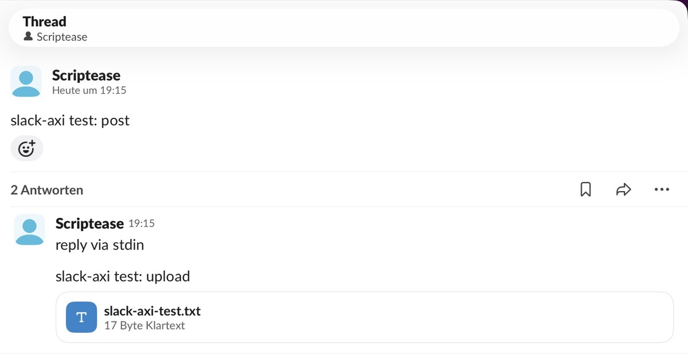

My New Slick CLI
The Pet Projects saga: 1. The Vault I Could Finally Give Away · 2. Blume · 3. Improving the Tool That Builds the Tools · 4. My New Slick CLI
Six months ago, I had an AI send two colleagues a poem and a joke in Slack. Today the same two got a zip file from me, sent by a tool that didn't exist that morning.
A poem and a joke
When I first started using Claude, I connected it to Slack, the chat app we use at work. A connector is a plug-in: it gives the AI new hands, in this case the ability to find people and post messages.
I asked it to send a colleague a poem about AI, and another colleague a joke. It found them, wrote the lines, posted them, and handed me the links.
It worked. And it was fun.
Slack in every session?
I kept the connector for a week.
Under the hood, a connector is an MCP server, the standard way to hook an AI up to a tool. The catch: every conversation I opened, for any task, started with the AI reading how to send Slack messages.
I barely used it. So I asked myself why I had an MCP server to send Slack messages in every session, and I removed it.
I want it everywhere
It stayed in the back of my mind. I wanted to send Slack messages and read channels. But I didn't want a plug-in loaded into every conversation. And I didn't want it only in Claude. I wanted it everywhere on my computer.
What works everywhere is a command-line tool, a CLI: a program you run by typing its name. Any AI that can type a command can use it. So can I.
Today I had a reason. I'd spent the day improving the ticket dashboard from an earlier post. Its list now follows the same order as the one we use in our Monday estimation meeting, so I can see which ticket comes next. I packed the new version into a zip file to share.
Why not build a CLI and use it to send out the newest version?
Just a different API endpoint
I'd done something like this once before. For crash reports there was no command-line tool, only a plug-in. So I had the AI wrap it: a small command that starts the plug-in, asks one question and shuts it down. It works, but every call waits while the plug-in starts.
I asked whether Slack had an official AI plug-in I could wrap the same way. It does. But it doesn't run on my Mac. Slack hosts it, and it needs the same thing every other route needs: a Slack plug-in of my own, registered with Slack. Slack has no personal keys. Every key comes from such a plug-in.
That changed the question. My words to the AI:
Okay, but having the request go through MCP doesn't make me use the MCP, it's just a different API endpoint I can use that has a different API, right?
Right. An API is the menu of requests a service accepts. Slack's regular one is documented down to every option, and it can download attachments. Same plug-in, same key, and nothing to start up. We skipped the AI plug-in.
Fingers crossed
I was sure our company Slack would need an admin to approve the plug-in. So I didn't try it there.
I still had my private Slack, set up to test an earlier project. The AI wrote the tool there, and I created the plug-in and pasted my key. We sent a message, uploaded a file and downloaded it again. All of it worked.

Me talking to myself on my alter ego.It's called slack-axi. The ending comes from AXI, ten rules for commands whose reader is an AI instead of a person: short answers, compact tables, a clear "nothing found".
For the company I wrote a ticket: please approve one Slack plug-in, here's what it can do, here's the working demo. Each person who uses it gets their own key, and a key can only do what that person can already do in Slack. I tagged the ticket for our Monday estimation meeting, the one with the boss in it. Fingers crossed.
The cogwheel didn't show up
Then I went to look at the settings myself.
The company Slack's cogwheel menu didn't show up for me. That's the admin menu, so I took it as confirmation. But the page for creating plug-ins is somewhere else, and it's open to every member. I created the plug-in, installed it, and got my key. No admin, no approval.
The AI's first test was a message from me to me. It arrived.
Monday's ticket had already gone out of date. It no longer asked for approval. It asked for a review of the code.
My new slick CLI
Then the moment I'd built it for: send the zip file to the same two colleagues who'd once received a poem and a joke.
The CLI couldn't find them.
It was still using the member list from my private Slack: me and two bots. It keeps that list for a day, so it doesn't have to ask Slack every time. One refresh later it knew the whole company.
I dictated the message the way I dictate everything. What came out was:
"I'm sending you this from my new slick CLI."
Two uploads, one for each of them. The file landed in the same chat as the poem, six months later. This time no AI composed anything. It ran one command, twice.
Steal this
slack-axi is now public on GitHub. It's one file of plain Python, nothing to install. Copy it, put it on your path, done.
- Create your own Slack plug-in from the recipe in the repo,
app_manifest.json. If your company Slack lets every member do that, you won't need an admin either. - Copy your key from the plug-in's settings and run
slack-axi login. - Send something:
slack-axi upload @colleague file.zip --comment "…"
When I published it, the name turned out to be taken. An earlier post of mine ends on a name alone opens all the doors. I didn't follow my own advice. I had asked for research on a "Slack CLI". Searching for slack-axi would have found three Slack tools built for AI, two of them with my tool's exact name.
They need Node.js to run. Mine is a single file.